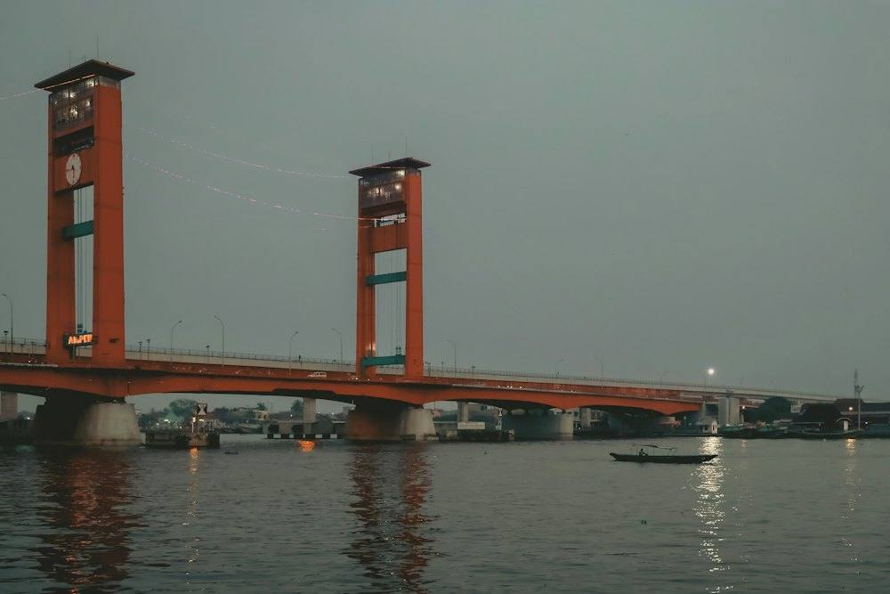

Contoh
Contoh pengumuman layanan
Informasi perubahan layanan akan ditampilkan di sini setelah diverifikasi petugas.
Baca selengkapnyaSemua kartu di bawah adalah contoh tampilan. Foto hanya ilustrasi dan bukan kegiatan nyata.
Informasi perubahan layanan akan ditampilkan di sini setelah diverifikasi petugas.
Baca selengkapnyaRingkasan kegiatan kecamatan akan ditampilkan di sini. Foto hanya ilustrasi.
Baca selengkapnyaInformasi penting untuk warga akan ditampilkan di sini setelah disahkan.
Baca selengkapnya
Agenda di wilayah kecamatan akan ditampilkan di sini. Foto hanya ilustrasi.
Baca selengkapnyaPanduan menyiapkan berkas akan ditampilkan di sini setelah persyaratan resmi tersedia.
Baca selengkapnyaBerita terkait wilayah akan ditampilkan di sini. Foto hanya ilustrasi.
Baca selengkapnya